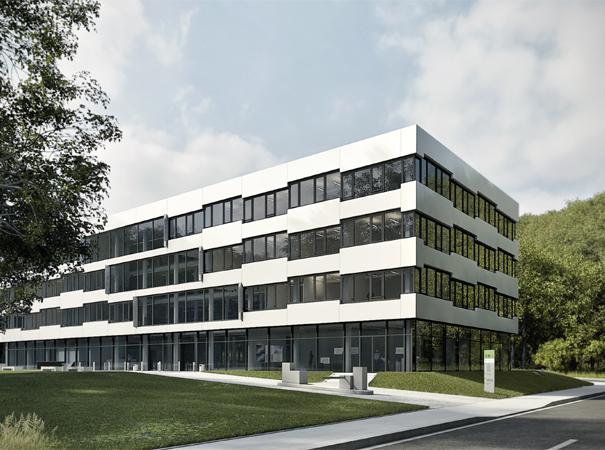

The Venue
ANDREAS-50 will take place on Friday, February 26, 2016 at Saarland University in Saarbrücken, Germany, in the all-new building of the Center for IT-Security, Privacy and Accountability (CISPA). ANDREAS-50 will be the very first event hosted in this acclaimed architectural marvel.
|  |
- Travel directions and maps. The CISPA building (E9 1) is in the very northeast of the campus.
- Coming by car. You can park across the CISPA building in the parking deck ("Universität Ost").
- Coming by train and bus. The stop "Stuhlsatzenhausweg" is right across the CISPA building.
- Coming by bike. There's ample bike stands available.
- Coming by plane. You can fly into Frankfurt or Luxembourg (and then take a train or car) or directly into Saarbrücken.